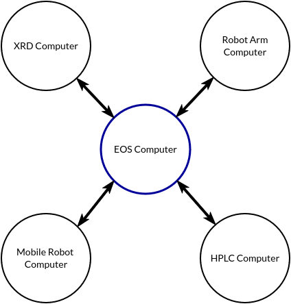

Laboratories#
Laboratories are the space in which devices and resources exist and where tasks, protocols, and campaigns of protocols take place.
A laboratory in EOS is a collection of:
Computers (e.g., devices capable of controlling equipment)
Devices (e.g., equipment/apparatuses in the laboratory)
Resources (e.g., containers for holding samples, reagents, lab location, consumables, etc.)
Laboratory Implementation#
Laboratories are implemented in the laboratories subdirectory inside an EOS package
Each laboratory has its own subfolder (e.g., laboratories/color_lab)
The laboratory is defined in a YAML file named
lab.yml.
Below is an example laboratory YAML file for a solar cell fabrication lab:
lab.yml
name: solar_cell_fabrication_lab
desc: A laboratory for fabricating and characterizing perovskite solar cells
computers:
xrd_computer:
desc: XRD system control and data analysis
ip: 192.168.1.101
solar_sim_computer:
desc: Solar simulator control and J-V measurements
ip: 192.168.1.102
robot_computer:
desc: Mobile manipulation robot control
ip: 192.168.1.103
devices:
spin_coater:
desc: Spin coater for depositing perovskite and transport layers
type: spin_coater
computer: eos_computer
meta:
location: glovebox
uv_ozone_cleaner:
desc: UV-Ozone cleaner for substrate treatment
type: uv_ozone_cleaner
computer: eos_computer
meta:
location: fume_hood
thermal_evaporator:
desc: Thermal evaporator for metal electrode deposition
type: thermal_evaporator
computer: eos_computer
init_parameters:
max_temperature: 1000C
materials: [Au, Ag, Al]
meta:
location: evaporation_chamber
solar_simulator:
desc: Solar simulator for J-V curve measurements
type: solar_simulator
computer: solar_sim_computer
init_parameters:
spectrum: AM1.5G
intensity: 100mW/cm2
meta:
location: characterization_room
xrd_system:
desc: X-ray diffractometer for crystal structure analysis
type: xrd
computer: xrd_computer
meta:
location: characterization_room
mobile_robot:
desc: Mobile manipulation robot for automated sample transfer
type: mobile_robot
computer: robot_computer
init_parameters:
locations:
- glovebox
- fume_hood
- annealing_station
- evaporation_chamber
- characterization_room
meta:
location: characterization_room
resource_types:
vial:
meta:
capacity: 20 # ml
petri_dish:
meta:
capacity: 100 # ml
crucible:
meta:
capacity: 5 # ml
resources:
precursor_vial_1:
type: vial
meta:
location: glovebox
precursor_vial_2:
type: vial
meta:
location: glovebox
precursor_vial_3:
type: vial
meta:
location: glovebox
substrate_dish_1:
type: petri_dish
meta:
location: glovebox
substrate_dish_2:
type: petri_dish
meta:
location: glovebox
au_crucible:
type: crucible
meta:
location: evaporation_chamber
ag_crucible:
type: crucible
meta:
location: evaporation_chamber
Computers (Optional)#
Computers control devices and host EOS devices. Each computer that is required to interface with one or more devices must be defined in this section. The IP address of each computer must be specified.
There is always a computer in each lab called eos_computer that has the IP “127.0.0.1”. This computer is the computer that runs the EOS orchestrator, and can be thought of as the “central” computer. No other computer named “eos_computer” is allowed, and no other computer can have the IP “127.0.0.1”. The “computers” section need not be defined unless additional computers are required (e.g., if not all devices are connected to eos_computer).

computers:
xrd_computer:
desc: XRD system control and data analysis
ip: 192.168.1.101
solar_sim_computer:
desc: Solar simulator control and J-V measurements
ip: 192.168.1.102
robot_computer:
desc: Mobile manipulation robot control
ip: 192.168.1.103
Devices (Required)#
Devices are equipment or apparatuses in the laboratory that are required to perform tasks.
Each device must have a unique name inside the lab and must be defined in the devices section of the laboratory YAML file.
devices:
spin_coater:
desc: Spin coater for depositing perovskite and transport layers
type: spin_coater
computer: eos_computer
meta:
location: glovebox
uv_ozone_cleaner:
desc: UV-Ozone cleaner for substrate treatment
type: uv_ozone_cleaner
computer: eos_computer
meta:
location: fume_hood
thermal_evaporator:
desc: Thermal evaporator for metal electrode deposition
type: thermal_evaporator
computer: eos_computer
init_parameters:
max_temperature: 1000C
materials: [Au, Ag, Al]
meta:
location: evaporation_chamber
type: Every device must have a type, which matches a device specification (e.g., defined in the devices subdirectory
of an EOS package).
There can be multiple devices with different names of the same type.
computer: The computer that controls the device. If not “eos_computer”, the computer must be defined in the “computers” section.
init_parameters (optional): Parameters required to initialize the device. These parameters are defined in the device specification and can be overridden here.
meta (optional): A dictionary of arbitrary metadata for the device instance (e.g., location).
Resources (Optional)#
Resources represent anything that tasks should exclusively allocate, such as containers (vessels for holding samples), lab locations that can only be occupied by one container, reagents, or other consumables.
Resources are defined using two sections in the laboratory YAML file:
resource_types: Templates that define the properties of a resource type
resources: Individual resource instances with unique names
resource_types:
vial:
meta:
capacity: 20 # ml
petri_dish:
meta:
capacity: 100 # ml
resources:
precursor_vial_1:
type: vial
meta:
location: glovebox
precursor_vial_2:
type: vial
meta:
location: glovebox
substrate_dish_1:
type: petri_dish
meta:
location: glovebox
Resource Types:
Define templates with shared properties for resources of the same type
meta (optional): Default metadata for all resources of this type (e.g., capacity)
Resources:
Each resource has a unique name (e.g.,
precursor_vial_1)type: The resource type (must match a defined
resource_type)meta (optional): Instance-specific metadata, which overrides or extends the resource type’s meta (e.g., current location)